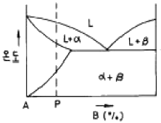
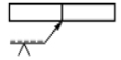

침투비파괴검사기사(구) (2005-03-20 기출문제)
1과목: 침투탐상시험원리
1. 다음 침투탐상시험법 중 일반적으로 가장 감도가 높으나 값이 비싼 방법은?
- 후유화성 염색침투탐상시험법
- 후유화성 형광침투탐상시험법
- 수세성 형광침투탐상시험법
- 용제 제거성 염색침투탐상시험법
(정답률: 알수없음)

2. 침투탐상검사시 현상제를 적용한 후 관찰할 때까지의 시간을 무엇이라 하는가?
- 유화시간
- 현상시간
- 침투시간
- 전처리시간
(정답률: 알수없음)
3. 후유화성 침투탐상시험의 유화시간에 대해 바르게 설명한 것은?
- 가능한 한 시간이 길면 길수록 좋다.
- 중요하게 고려되지만 탐상에 큰 영향을 미치지는 않는다.
- 상당히 중요한 인자로서 탐상결과의 가부를 결정해 주기도 한다.
- 탐상 표면에 잔존하는 유화제와 과잉침투제의 세척에 요하는 시간이다.
(정답률: 알수없음)
4. 후유화성 형광침투액과 속건식 현상제를 사용하여 침투탐상시험을 하고자 한다. 다음 중 시험순서가 옳은 것은?
- 전처리→침투→세척→유화→현상→건조→관찰
- 전처리→침투→유화→세척→현상→건조→관찰
- 전처리→침투→유화→세척→건조→현상→관찰
- 전처리→침투→세척→유화→건조→현상→관찰
(정답률: 알수없음)
5. 다음 침투탐상시험 절차에 대한 설명 중 올바른 것은?
- 세척시간은 가능한 한 짧게 해야 시험물 표면의 추가 오염을 방지할 수 있다.
- 유화시간이 길수록 불필요한 시험물 표면의 침투제 제거를 확실히 할 수 있다.
- 침투시간이 길수록 미세한 결함검출이 확실하게 될수 있다.
- 현상제는 두껍게 도포할수록 미세한 결함검출이 확실하게 될 수 있다.
(정답률: 알수없음)
6. 30,000개의 소형 주철주물을 침투탐상시험에 의해 신속하게 검사하고자 한다. 가장 적합한 침투제의 선택은?
- 후유화성 염색침투액
- 수세성 염색침투액
- 후유화성 형광침투액
- 수세성 형광침투액
(정답률: 알수없음)
7. 수세성 침투제에 대한 물의 오염도 측정시험으로 100ml 실린더에 침투제를 40ml 넣고 80 ℉의 온도를 유지시킨후 뷰렛으로 0.5ml의 물을 혼합시켜 침투제의 변화를 관찰하였다. 이와 같은 방법으로 계속하여 혼합시킨 물의 양이 10ml가 되었을 때 침투제가 혼탁해지며 분리되는 변화가 나타났다면 오염도는?
- 20%
- 25%
- 75%
- 80%
(정답률: 알수없음)
8. 다음 중 침투탐상시험시 결함검출에 가장 큰 영향을 주는 요인은?
- 건조시간
- 현상시간
- 수세시간
- 침투시간
(정답률: 알수없음)
9. 무현상법에 대한 설명으로 옳지 않은 것은?
- 현상과정에서 현상제를 적용하지 않고 관찰하는 방법이다.
- 현상제를 적용하는 검사방법에 비해 검사 감도가 낮다.
- 시험체에 열을 가해 침투제가 시험면 밖으로 나오게 하여 관찰하는 방법이다.
- 용제제거성 염색침투탐상시험에 적용되는 방법이다.
(정답률: 알수없음)
10. 다음 중 침투탐상검사법으로 탐상하기가 곤란한 것은?
- 알루미늄 단조품
- 주강품
- 세라믹스
- 유리제품
(정답률: 알수없음)
11. 주조품에서 주로 내부 모서리 부분에 선형 지시형태로 나타나는 결함은?
- 수축관(Shrinkage)
- 핫티어(Hot Tear)
- 콜드셧(Cold shut)
- 겹침(Laps)
(정답률: 알수없음)
12. 후유화제법에서 가장 중요하게 다루어야 할 작업시간은?
- 침투시간
- 현상시간
- 유화시간
- 건조시간
(정답률: 알수없음)
13. 증기 세척법으로 제거될 수 없는 표면의 오염 물질은?
- 녹
- 가용성 기름
- 그리이스
- 중유
(정답률: 알수없음)
14. 표면에 존재하는 크레이터 균열은 침투탐상시험에서 통상적으로 어떻게 나타나는가?
- 무관지시
- 선형지시
- 원형지시
- 의사지시
(정답률: 알수없음)
15. 표면이 거친 부위를 침투탐상시험할 경우 가장 효과적인 방법은?
- 후유화제법
- 용제제거법
- 수세법
- 산소공존(LOX)법
(정답률: 알수없음)
16. 성능이 좋은 침투제가 구비해야 할 조건은?
- 검사부품과는 화학반응을 일으키지 않아야 한다.
- 점성이 커야 한다.
- 휘발성이 커야 한다.
- 무기용제의 액체이어야 한다.
(정답률: 알수없음)
17. 다음 중 유화제의 역할은?
- 시험표면의 전처리에 이용되며 사용시 신속한 세척이 이루어진다.
- 침투제의 침투효과와 적심(wetting ability) 효과를 돕는 작용이 있다.
- 침투제와 작용하여 물로 쉽게 씻을 수 있도록 작용을 한다.
- 현상제의 일종으로 침투액을 쉽게 빨아 올림은 물론 시험 표면에 고른 분사를 위해 사용된다.
(정답률: 알수없음)
18. 사용승인을 받은 록스(Lox) 침투액이 함유하고 있는 물질이 아닌 것은?
- 형광 물질
- 세척 물질
- 발화 물질
- 비폭발성 물질
(정답률: 알수없음)
19. 흔히 현장에서 사용하는 초음파탐상시험법의 장점이 아닌것은?
- 검사되는 재료의 두께에 대한 제한이 적다.
- 균열과 같은 개구가 작은 결함의 검출에 알맞다.
- 결함상에 직관성이 높다.
- 라미네이션과 같은 결함탐상에 유용하다.
(정답률: 알수없음)
20. 자외선등은 충분히 가열되기까지는 전기능을 발휘하지 못한다. 필요한 방전 온도에 이르기까지 최소한 몇 분의 가 열시간이 요구되는가?
- 1분
- 5분
- 10분
- 15분
(정답률: 알수없음)
2과목: 침투탐상검사
21. 계속 사용하고 있는 침투액의 선명도(brightness)에 대한 점검 주기는 얼마로 하는 것이 적당한가?
- 1개월
- 3개월
- 6개월
- 1년
(정답률: 알수없음)
22. 복잡한 형상의 소형 제품 제작단계에서 침투탐상검사시 과잉의 후유화성 침투액을 제거하는 방법으로 가장 효과적인 것은?
- 압력 분사
- 물로 임의대로 분사
- 일반 용제
- 고온의 물에 담금
(정답률: 알수없음)
23. 알루미늄, 마그네슘, 스테인리스 강 용접품의 결함 종류가 아닌 것은?
- 균열(Crack)
- 기공(Porosity)
- 겹침(Laps)
- 융합불량(Lack of bond)
(정답률: 알수없음)
24. 주조품 시험체 표면의 산화물을 제거하기 위한 가장 효과적인 전처리 방법은?
- 와이어 브러싱
- 초음파 세척
- 고압용수 세척
- 산 세척
(정답률: 알수없음)
25. 다음 중 수세성 침투액에 대한 물의 오염을 측정하는 계산식으로 옳은 것은?
- 오염도(%) = (침투액의 양 + 첨가한 물의 양 / 첨가한 물의 양) × 100
- 오염도(%) = (첨가한 물의 양 / 침투액의 양 + 첨가한 물의 양) × 100
- 오염도(%) = (침투액의 양 / 첨가한 물의 양) × 100
- 오염도(%) = (첨가한 물의 양 / 침투액의 양) × 100
(정답률: 알수없음)
26. 다음 중 수세성 형광침투탐상검사의 특성을 옳게 나타낸것은?
- 일반적으로 다른 방법에 비하여 침투시간을 단축할 수 있다.
- 다른 침투액에 비해 수분의 혼입 또는 온도의 영향에 의한 성능의 저하가 적다.
- 다른 검사방법에 비해 가장 미세한 결함의 탐상이 가능하다.
- 비교적 표면이 거칠고 형상이 복잡한 시험체의 탐상이 가능하다.
(정답률: 알수없음)
27. 주로 소형 대량부품 및 주조품과 같이 표면이 거칠거나, 형상이 복잡한 것에 적용하기 가장 좋은 침투탐상검사로 야외에서보다는 공장에서 효과적인 침투탐상검사는 어떤 검사법인가?
- 수세성 형광침투탐상검사
- 용제 제거성 염색침투탐상검사
- 후유화성 형광침투탐상검사
- 후유화성 염색침투탐상검사
(정답률: 알수없음)
28. 섬유강화 복합재료에 형광침투탐상검사를 할 때 침투액에 킬레이트 약품을 첨가하여 사용하기도 한다. 이 킬레이트 약품에 의하여 일어나는 현상은?
- 형광침투액의 침투속도를 증가 시킨다.
- 침투액의 건조속도를 빠르게 한다.
- 침투액의 점성을 감소시킨다.
- 형광 물질에서 발생되는 파장에 비해 더 긴 파장의 형광이 발생된다.
(정답률: 알수없음)
29. 침투탐상검사법 중에서 가장 결함검출능력이 좋은 방법으로, 미세한 결함과 다른 방법으로 과세척이 되기 쉬운 얕은 결함 및 폭이 넓은 결함 등을 검출해야 하는 경우에 사용되는 검사법은?
- 후유화성 형광침투탐상검사
- 수세성 형광침투탐상검사
- 용제제거성 형광침투탐상검사
- 수세성 염색침투탐상검사
(정답률: 알수없음)
30. 침투탐상검사에서 탐상제를 적용하는 방법중 붓칠을 해서는 안되는 공정은?
- 침투제 적용
- 유화제 적용
- 현상제 적용
- 과잉침투제 제거
(정답률: 알수없음)
31. 침투탐상시험에서 검사조건으로 기록해야 할 최소한의 필요 내용에 해당되지 않는 것은?
- 시험 장소
- 탐상방법
- 시험체의 온도
- 현상시간
(정답률: 알수없음)
32. 침투액에 함유되는 황의 함량을 제한하고 있는데 일반적으로 몇 % 까지 허용되는가?
- 0.01%
- 0.1%
- 1.0%
- 10.0%
(정답률: 알수없음)
33. 침투탐상검사에 사용하는 대비시험편의 사용 방법을 맞게 설명한 것은?
- 탐상제의 침투시간을 설정하는데 사용된다.
- A형 비교시험편으로 온도에 의한 영향을 점검할 때에는 중간의 홈을 기준으로 기준탐상제와 비교탐상제를 동시에 확인한다.
- B형으로 조작의 적합성 여부를 확인할 때에는 도금이 된 면에서 탐상한다.
- 한번 사용한 대비시험편은 재사용이 불가능하다.
(정답률: 알수없음)
34. 용접부의 검사에 적용하기 가장 적합한 것은?
- 용제제거성 침투탐상검사
- 수세성 침투탐상검사
- 후유화성 침투탐상검사(기름베이스 유화제)
- 후유화성 침투탐상검사(물베이스 유화제)
(정답률: 알수없음)
35. 침투탐상시험시 침투제에 함유된 황이나 염화물(Chlorine)은 특히 다음의 어느 시험체 검사에 영향을 미치는가?
- 알루미늄합금
- 니켈합금
- 마그네슘합금
- 연강
(정답률: 알수없음)
36. 불연속지시가 나타난 것을 제거한 후 다시 현상제를 적용하여도 뚜렷한 불연속 지시가 관찰되었다. 이 불연속의 설명으로 다음 중 가장 알맞는 것은?
- 미세한 불연속이기 때문이다.
- 기공류의 불연속에서 대부분 나타난다.
- 얕은 균열의 불연속에서 대부분 나타난다.
- 큰 불연속 안에 침투액의 양이 많기 때문이다.
(정답률: 알수없음)
37. 기준탐상제에 대한 설명 중 옳은 것은?
- 검사 기준을 마련하기 위하여 대비시험편에 적용하는 탐상제
- 탐상제 구입시에 일부를 청결한 용기에 채취하여 보존한 것
- 탐상 지시의 기준을 마련하는데 사용하는 탐상제
- 탐상 감도를 비교하기 위한 탐상제
(정답률: 알수없음)
38. 검사중에 침투액의 침투성이 좋아지도록 통상적으로 행하는 효율적인 방법은?
- 진동을 준다.
- 침투제를 가열한다.
- 초음파 펌핑을 한다.
- 진공을 만들어 압력을 올려준다.
(정답률: 알수없음)
39. 침투탐상검사를 할 때 안전관리상 주의할 사항 중 옳지 않은 것은?
- 형광침투탐상시 적절한 필터를 사용하여 불필요한 광선을 걸러 낸다.
- 뚜껑없는 용기에 담아 사용하는 침투액은 인화점이 보통 120℉ 이하의 것을 요구한다.
- 피부의 자극을 막기 위해 앞치마, 장갑 등을 사용하여 필요없는 접촉을 피한다.
- 건식현상제나 침투액의 증기가 있는 제한된 구역에는 환기를 시키는 팬을 설치한다.
(정답률: 알수없음)
40. 침투탐상검사용 모니터 판넬에 대한 내용이 아닌 것은?
- 재질은 스테인레스이고, 판의 반쪽은 크롬도금이 되어있다.
- 크롬도금이 된 부분의 중심부에는 4개의 결함이 큰 것부터 작은 순서로 배열되어 있다.
- 크롬도금 면은 검출능력을 조사한다.
- 균열이 없는 반 쪽은 세정성을 시험하는데 사용된다.
(정답률: 알수없음)
3과목: 침투탐상관련규격
41. KS W 0914에 따르면, 사용 중인 침투액은 형광휘도시험을 하였을 때 성능이 저하되면 폐기 처리한다. 그 기준은?
- 사용하지 않은 침투액 휘도의 95% 미만이었을 때
- 사용하지 않은 침투액 휘도의 90% 미만이었을 때
- 사용하지 않은 침투액 휘도의 85% 미만이었을 때
- 사용하지 않은 침투액 휘도의 50% 미만이었을 때
(정답률: 알수없음)
42. ASME Sec.Ⅴ, Art.6의 규정에 따라 강용접부의 융합부족을 검출하고자 할 때 수세성 형광침투제의 최소 침투시간은?
- 5분
- 7분
- 10분
- 14분
(정답률: 알수없음)
43. KS W 0914에서 규정하고 있는 액체산소와 양립할 수 있는 재료에 대한 침투탐상제는 다음 중 어느 값 이상의 충격 감도시험을 합격한 것이라야 하는가?
- 95J
- 85J
- 75J
- 65J
(정답률: 알수없음)
44. KS B 0816에 따른 침투탐상시험에서 특별한 규정이 없으면 시험 장치를 사용하지 않아도 되는 시험은?
- 용제제거성 형광침투탐상시험-건식현상
- 후유화성 형광침투탐상시험(물베이스)-건식현상
- 후유화성 염색침투탐상시험(기름베이스)-속건식현상
- 용제제거성 염색침투탐상시험-속건식현상
(정답률: 알수없음)
45. KS B 0816에 따른 용제제거성 침투액의 제거 방법으로 적합한 것은?
- 침투시간을 사양서에서 요구하는 시간의 두배로 한다.
- 적용하는 침투액의 양을 증가시킨다.
- 세척액이 스며든 헝겊 또는 종이수건으로 제거한다.
- 세척액에 직접 침지한다.
(정답률: 알수없음)
46. ASME 규격에 따르면, 침투 탐상제의 불순물(황) 관리는 침투제 50g을 증발접시에 담아 90∼100℃의 온도로 60분간 가열시킨 후 남은 잔류물을 분석하여 0.0025g미만이면 탐상이 가능하고 이상이면 재분석 후 황의 함유량이 잔류물 무게비 몇 %를 초과해서는 안되는가?
- 1%
- 2%
- 3%
- 5%
(정답률: 알수없음)
47. KS B 0816(`04년판)에 따른 침투탐상시험에서 다음 중 수세에 의한 염색침투액의 분류에 해당하는 것은?
- FA
- VA
- VB
- FB
(정답률: 알수없음)
48. KS B 0816에 의한 침투탐상시험시 선상 침투지시 모양이란 어떠한 지시를 말하는가? (단, 갈라짐에 의한 지시 중에서)
- 결함 길이가 나비의 1배 이상인 것
- 결함 길이가 나비의 2배 이상인 것
- 결함 길이가 나비의 3배 이상인 것
- 결함 상호간 거리가 2㎜ 이상인 결함
(정답률: 알수없음)
49. ASME Sec.Ⅷ에 따르면 침투탐상시험에서 나타나는 지시중 판정의 대상이 되는 지시는 크기가 최소한 얼마를 초과하여야 하는가?
- 1/2 inch
- 1/4 inch
- 1/8 inch
- 1/16 inch
(정답률: 알수없음)
50. KS B 0816에 따르면 침투탐상시험의 결과, 합격한 시험체 표시를 요할 때 표시방법이 아닌 것은?
- 각인
- 부식
- 적갈색 착색
- 적색 착색
(정답률: 알수없음)
51. KS W 0914에 의한 항공우주용 기기를 침투탐상검사할 때 수세성 과잉침투액을 물로 세척하는 경우 적절한 물의 온도 범위는?
- 0℃∼10℃
- 10℃∼38℃
- 38℃∼72℃
- 72℃∼90℃
(정답률: 알수없음)
52. KS B 0816에서 세척처리시 형광 침투액을 사용할 경우 최대 허용 수온은? (단, 특별한 규정이 없을 때)
- 10℃
- 18℃
- 20℃
- 40℃
(정답률: 알수없음)
53. KS W 0914에서 분류한 침투액계 중 Type Ⅱ는 어느 것을 말하는가?
- 수세성침투액 계통
- 후유화성침투액 계통
- 형광침투액 계통
- 염색침투액 계통
(정답률: 알수없음)
54. KS W 0914에 의해 형광침투제는 적용하지만 현상제는 사용하지 않을 때 허용되는 최대 침투시간은?
- 30분
- 60분
- 120분
- 240분
(정답률: 알수없음)
55. ASME Sec.V, Art.24 SE-165의 용접부에서 발견될 수 있는 것은?
- 크레이터 균열
- 겹침
- 수축공
- 라미네이션
(정답률: 알수없음)
56. 인터넷에서 다른 문서와 연결할 수 있도록 작성된 문서를 무엇이라 하는가?
- 멀티미디어
- 하이퍼미디어
- 하이퍼텍스트
- 멀티텍스트
(정답률: 알수없음)
57. CPU가 입출력 인터페이스의 상태를 일일이 검사하여 직접 입출력을 제어하는 방식은?
- DMA
- programmed I/O
- interrupt driven I/O
- channel controled I/O
(정답률: 알수없음)
58. 인터넷 전자우편이나 채팅 그리고 메시지를 뉴스그룹 등에 올릴 때, 글의 내용을 보충하기 위해 키보드 글자나 부호들의 짧은 나열을 이용하여, 보통 얼굴표정을 흉내내거나 느낌을 나타내기 위한 것은 무엇인가?
- emoticon
- icon
- banner
- prompt
(정답률: 알수없음)
59. 인터넷에서 사용하는 문서 중 성격상 서로 다른 것은?
- HTML
- SGML
- TCL
- XML
(정답률: 알수없음)
60. 거리에 관계없이 자료발생 즉시 처리하는 양방향 통신 기능을 가진 정보처리 방식은?
- 온라인(On-Line) 처리
- 일괄(Batch) 처리
- 원격 일괄(Remote batch) 처리
- 분산 자료 처리(distributed data processing)
(정답률: 알수없음)
4과목: 금속재료학
61. 용융금속이 응고된 후 형성된 등축정 조직에 대한 설명이 틀린 것은?
- 주물의 수축공 내면 등에서 잘 발달하며 나무 가지 모양의 결정을 말한다.
- 결정립이 여러 방향을 향하고 있으므로 조직이 균일하다.
- 기계적 성질이 우수하고, 응고할 때 발생하는 결함의 형성을 줄일 수 있다.
- 응고조직은 측면에서 기계적 특성상 등축정 조직 부분 비중이 높은 것이 좋다.
(정답률: 알수없음)
62. 질화강의 주요 합금원소가 아닌 것은?
- Al
- Cr
- Si
- Mo
(정답률: 알수없음)
63. Al합금의 종류 중 Al-Si계 합금에 대한 설명으로 옳지 않은 것은?
- 고용체에 의해 시효경화를 이용하여 경도를 증대한 대표적인 Al합금이다.
- 평형상태에서 Al에 Si가 고용될 수 있는 한계는 공정온도인 577°에서 약 1.65%이다.
- 용융상태에서 유동성이 높으며 응고중의 주입성이 우수하고 열간취성이 비교적 없다.
- AA알루미늄 식별부호 중 4XXX에 해당하며 우수한 주조 특성 때문에 상업적으로 많이 사용되는 합금이다.
(정답률: 알수없음)
64. 그림의 상태도는 어떠한 상변태를 하는 합금을 나타낸 것인가?

- 동소 변태형 합금
- 공석 변태형 합금
- 석출 경화형 합금
- 전율 고용체형 합금
(정답률: 알수없음)
65. 다음 중 비정질 합금의 제조 방법이 아닌 것은?
- 기체 급냉법
- 액체 급냉법
- 고체 침탄법
- 전기 또는 화학 도금법
(정답률: 알수없음)
66. 합금강 재료의 마텐자이트 변태 개시 온도(Ms)를 낮게 하는 가장 큰 요인은?
- 탄소 함량의 증가
- 코발트 함량의 증가
- 결정입도의 조대화
- 소성가공
(정답률: 알수없음)
67. Mg 및 그 합금의 특징에 대한 설명 중 가장 관계가 먼 것은?
- 실용재료로서 가장 가벼운 금속이다.
- 비강도(比强度)가 커서 휴대용 기기나 항공우주용 재료로서 매우 유리하다.
- 주조시의 생산성이 나쁘며, 내식성은 고순도의 경우 나쁘고 저순도의 경우 매우 좋다. 따라서 피막처리가 필요 없다.
- 고온에서는 매우 활성이고, 분말이나 절삭설은 발화의 위험이 있다.
(정답률: 알수없음)
68. 강의 Martensite 조직이 경도가 큰 이유가 될 수 없는 것은?
- 탄소에 의한 Fe의 격자강화
- 급냉으로 인한 내부응력 존재
- 확산 변태에 의한 Pearlite의 분리
- 쌍정형성 및 입자 미세화에 의한 전위이동 억제
(정답률: 알수없음)
69. 중성자를 잘 통과 시키므로 원자로 연료의 피복제, 중성자의 반사제나 원자핵 분열기에 이용되는 금속은?
- Ge
- Be
- Si
- Te
(정답률: 알수없음)
70. 티타늄과 티타늄합금의 특성 중 틀린 것은?
- 무게에 비해 높은 강도를 갖는다.
- 높은 내식성을 갖는다.
- 약 550℃ 까지 높은 온도 물성이 좋다.
- O2, N2, H2, C같은 침입형 원소와 반응성, 친화성이 작기 때문에 가공성이 나쁘다.
(정답률: 알수없음)
71. 2개의 금속이 광범위한 조성에 걸쳐 치환형 고용체가 형성되기 위한 조건을 바르게 설명한 것은?
- 원자 반경의 차이가 약 45% 이하
- 비슷한 원자밀도
- 비슷한 자유에너지
- 비슷한 원자가
(정답률: 알수없음)
72. α-황동을 냉간 가공하여 재결정 온도 이하의 낮은 온도로 풀림을 하면 가공 상태보다 더욱 경도가 증가되는 현상은?
- 시효 경화
- 석출 경화
- 경년 변화
- 저온 풀림 경화
(정답률: 알수없음)
73. 다음 중 내마모성을 주목적으로 하는 특수강은?
- Ni-Cr 강
- 고 Mn 강
- Cr 강
- Cr-Mo 강
(정답률: 알수없음)
74. 0.2% 탄소강의 723℃ 선상에서 오스테나이트의 양(%)은?
- 약 23%
- 약 40%
- 약 67%
- 약 80%
(정답률: 알수없음)
75. 알루미늄합금의 제조시 과열(overheating)을 피해야 하는 이유로 적합하지 않는 것은?
- 과열을 받은 합금은 응고할 때 천천히 냉각됨으로서 최대한 결정립이 생성되기 때문이다.
- 고온에서의 알루미늄은 수증기와 반응하여 산화 알루미늄 (Al2O3)을 생성하기 때문이다.
- 고온에서의 알루미늄은 수증기와 반응하여 수소(H2)를 생성하기 때문이다.
- 과열을 받은 합금은 주조성이 떨어지기 때문이다.
(정답률: 알수없음)
76. 탄소강에서 인(P)의 영향 중 틀린 것은?
- Fe3P를 형성하며 입자의 조대화를 촉진한다.
- 인(P)의 악 영향은 탄소량이 증가하면 감소한다.
- 상온 취성의 원인이 된다.
- Fe3P는 MnS 또는 MnO와 ghost line을 형성한다.
(정답률: 알수없음)
77. 다음 중 알루미늄의 특성이 아닌 것은?
- 상온에서 판, 선재로 압연가공하면 경도와 인장강도가 증가하고 연신율이 감소한다.
- 구리에 비해 산과 알칼리에 대한 부식저항이 더 크다.
- 산화피막이 형성되어 내식성이 강하다.
- 융점이 낮아 용해가 용이하고 용접성이 우수하다.
(정답률: 알수없음)
78. 탄소강에 나타나는 조직 중 연성이 가장 풍부한 것은?
- 페라이트(Ferrite)
- 마텐자이트(Martensite)
- 투루스타이트(Troostite)
- 베이나이트(Bainite)
(정답률: 알수없음)
79. 냉간가공한 황동을 풀림했을 때의 재결정 입도 미세화에 대한 설명 중 맞는 것은?
- 재결정 입도는 온도가 높고 가공도가 클수록 조대해진다.
- 재결정 입도는 온도가 높고 가공도가 클수록 미세해진다.
- 재결정 입도는 온도가 낮고 가공도가 클수록 조대해진다.
- 재결정 입도는 온도가 낮고 가공도가 클수록 미세해진다.
(정답률: 알수없음)
80. 결정 입계의 특성에 대해 바르게 설명한 것은?
- 결정입계 에너지 때문에 결정립이 성장하거나 이동할 수 있다.
- 결정입계의 밀도는 높은 온도에서 더욱 증가하려는 경향이 있다.
- 결정입계는 결정입내보다 치밀한 원자구조를 갖는다.
- 결정입계는 전위의 이동을 방해하지 않는다.
(정답률: 알수없음)
5과목: 용접일반
81. 다음의 용접 결함 중에서 치수상 결함에 해당하는 것은?
- 스트레인 변형
- 용접부 융합불량
- 기공
- 용접부 접합불량
(정답률: 알수없음)
82. 아크전압 30V, 아크전류 300A, 무부하전압이 80V인 용접기의 역률(power factor)은 얼마인가? (단, 내부 손실은 4 kW 이다)
- 48%
- 54%
- 68%
- 86%
(정답률: 알수없음)
83. 다음 중 비용극식 용접법은?
- 이산화탄소 아크용접
- 서브머지드 아크용접
- 일렉트로 가스용접
- 불활성가스 텅스텐 아크용접
(정답률: 알수없음)
84. 아크용접에 비교한 가스용접의 설명으로 틀린 것은?
- 아크용접에 비해서 유해 광선의 발생이 적다.
- 아크용접에 비해서 불꽃 온도가 높다.
- 열 집중성이 나빠서 효율적인 용접이 어렵다.
- 폭발 위험성이 크고 금속이 탄화 및 산화될 가능성이 많다.
(정답률: 알수없음)
85. 일렉트로 슬래그 용접의 장·단점 설명으로 틀린 것은?
- 박판용접에는 적용할 수 없다.
- 최소한의 변형과 최단시간의 용접법이다.
- 용접 진행 중 용접부를 직접 관찰할 수 있다.
- 아크가 눈에 보이지 않고 아크 불꽃이 없다.
(정답률: 알수없음)
86. 보기와 같은 용접 도시기호가 의미하는 것은?

- 화살표측에 V홈 용접
- 화살표의 반대측에 V홈 용접
- 판의 양쪽에 X홈 용접
- 판의 양쪽에 V홈 용접
(정답률: 알수없음)
87. 한 개의 용접봉으로 살을 붙일만한 길이로 구분해서 홈을 한 부분씩 여러 층으로 쌓아올린 다음 다른 부분으로 진행하는 방법은?
- 스킵법
- 덧살 올림법
- 캐스케이드법
- 전진 블록법
(정답률: 알수없음)
88. 아크용접기의 정격 2차전류가 400A이고 정격사용율이 40%이면 300A로 용접전류를 사용하여 용접할 경우 이 용접기의 허용 사용율은 약 몇 % 인가?
- 71%
- 80%
- 88%
- 91%
(정답률: 알수없음)
89. 용접부가 급냉되었을 때, 나타나는 현상 설명으로 틀린것은?
- 연신율 저하
- 용접부의 취화
- 내균열성 향상
- 열영향부의 경화
(정답률: 알수없음)
90. 다층(multi-layer)용접시 전층의 용접 경화부에 대하여 후속층의 용접열로 조직 개선 효과를 줄 수 있는 것은 다음중 어느 효과에 의하여 가능한가?
- 뜨임(tempering)
- 담금질(quenching)
- 풀림(annealing)
- 불림(normalizing)
(정답률: 알수없음)
91. 레이저 용접의 특징에 대한 설명으로 틀린 것은?
- 열의 영향범위가 넓어 잔류응력이 크다.
- 광선이 용접의 열원이다.
- 열의 영향범위가 좁다.
- 원격 조작이 용이하다.
(정답률: 알수없음)
92. 티그 용접시 모재의 용입이 가장 깊어지는 경우는?
- He가스로 DCRP일 때
- He가스로 DCSP일 때
- Ar가스로 DCRP일 때
- Ar가스로 DCSP일 때
(정답률: 알수없음)
93. 자체 생성되는 화학 반응열을 이용하여 금속을 용접하는 용접법은?
- 스터드 용접법
- 테르밋 용접법
- 초음파 용접법
- 고주파 용접법
(정답률: 알수없음)
94. 용접이 끝나는 종점부분에서 아크를 짧게 천천히 운봉하며 다시 용접봉을 뒤로 보내 재빨리 아크를 끊는 방법과 가장 관계 있는 것은?
- 덧붙이의 처리방법
- 용접 슬래그 처리방법
- 언더컷의 처리방법
- 크레이터의 처리방법
(정답률: 알수없음)
95. 아세틸렌가스와 접촉하면 폭발성 화합물을 생성하는 금속은?
- 강
- 주철
- 동
- 알루미늄
(정답률: 알수없음)
96. 용접전류가 180A, 전압이 15V, 속도가 18 cm/min 일 때, 용접길이 1cm당 용접입열(heat input)은 몇 Joule인가?
- 9000
- 150
- 48600
- 2.5
(정답률: 알수없음)
97. 다음 중 용접의 장점이 아닌 것은?
- 재료가 절약되고 중량이 가벼워진다.
- 두께의 제한이 없다.
- 작업의 자동화가 쉽다.
- 잔류응력이 존재한다.
(정답률: 알수없음)
98. 피복 금속 아크용접기에는 발전형과 정류형이 있다. 발전형에 비교한 정류형의 특징 설명으로 틀린 것은?
- 소음이 적다.
- 취급이 쉽고 가격이 싸다.
- 보수나 점검이 간단하다.
- 옥외 현장 사용시에 편리하다.
(정답률: 알수없음)
99. 가스절단작업에서 다음 가스 중 예열 연소시 산소를 가장 많이 필요로 하는 가스는?
- 프로판
- 부탄
- 에틸렌
- 아세틸렌
(정답률: 알수없음)
100. 산소창(Oxygen lance)절단을 가장 적합하게 설명한 것은?
- 수중의 기포발생을 적게하여 작업을 용이하게 하기 위하여 보통 산소 수소염을 이용한다.
- 미세한 철분이나 알루미늄 분말을 소량 배합하고 첨가제를 혼합하여 건조공기 또는 질소를 절단부에 연속적으로 공급절단하는 방법이다.
- 내경 ø3.2∼6mm, 길이 1.5∼3m 정도의 파이프를 사용하여 파이프 자체가 연소하면서 절단하는 방법이다.
- 스테인레스강의 절단을 주목적으로 한 것이며, 중탄산소다를 주성분으로 용제 분말을 송급하여 절단하는 방법이다.
(정답률: 알수없음)